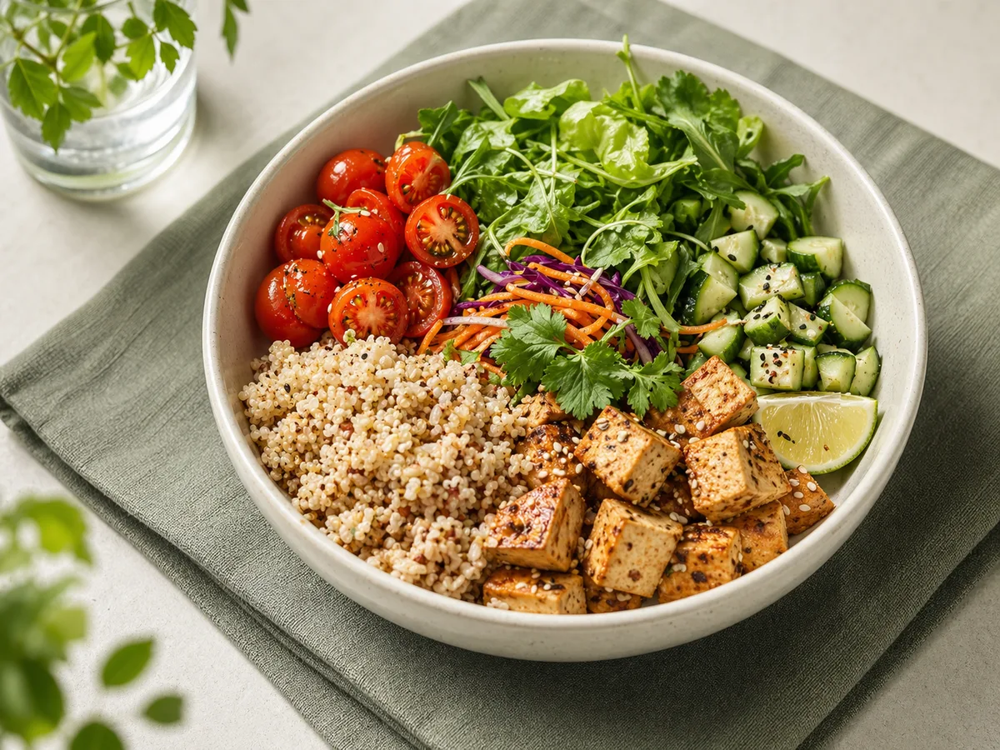
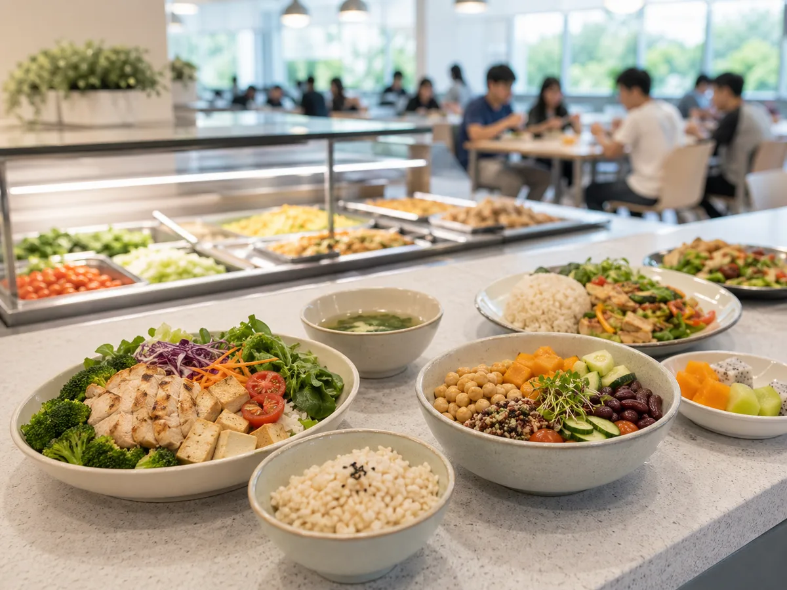

Knowledge is moderate
Health behavior / Consumer insights / Statistical modeling
Student Diet Quality
in Vietnam
Surveying 280 university students to understand how nutrition knowledge, physical activity, and daily food choices shape diet quality across urban campuses in Vietnam.
Ho Chi Minh City
Hanoi - Da Nang 280
Students Ages
18-25 Regression
Analysis
Hanoi - Da Nang 280
Students Ages
18-25 Regression
Analysis

1-minute takeaway
Diet quality is shaped by knowledge, routines, and environment.
Calorie knowledge is weakest
Foods to limit outnumber protective foods
Physical activity supports better diet quality
How the study worked
Nutrition knowledge
20 adapted CoNKS items, score 0-20
Physical activity
IPAQ-SF, MET-minutes per week
Diet quality
DQQ and GDR metrics across 29 food groups
What the data reveals
A
Diet quality summary
FGDS6.1
students consumed about 6 of 10 diverse food-group clusters
GDR score6.76 /18
substantial room for improvement
GDR-Healthy3.9
protective food groups
GDR-Limit6.1
foods to restrict
Foods to limit are higher than protective foods.
B
Nutrition knowledge breakdown
Students understand basic healthy eating principles, but struggle more with calories and nutrient specifics.
C
Eating pattern signals
Vegetables
21.2%Legumes, nuts, seeds
27.7%Processed meats
65.0%Processed snacks and sweets
53.7%Sugar-sweetened beverages
40.0%Fast food
29.6% Protective foods under-consumed Foods to limit over-consumed
D
Predictors of better diet quality
Physical activity
beta = 0.0029p < 0.001
Age
beta = 0.1284p = 0.005
Nutrition knowledge
beta = 0.1102p = 0.014
Sex
Not significantMore active students, older students, and those with stronger nutrition knowledge tend to have better diet quality. Model R2 = 0.538
Why diet quality is falling short
Convenience wins
Processed meats, snacks, and sugary drinks are common on campus.
Protective foods lag
Vegetables, legumes, and fruit remain below ideal levels in student diets.
Knowledge-action gap
Students know some basics, but daily choices are shaped by campus reality and routine.
Design implications for healthier campuses
Healthy defaults
Make nutritious meals the easy option at cafeterias.
Nutrition education
Close gaps in calorie and nutrient understanding.
Active campus routines
Promote movement as part of daily student life.
Better food environments
Reduce friction around healthier food access.

Better student diets require more than awareness alone.
Knowledge, activity, and supportive campus environments must work together.